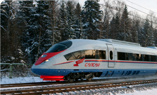
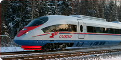
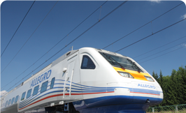
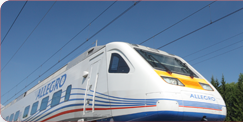

Национальная Система Высокоскоростного Движения (НСВД) – это совокупность железнодорожной инфраструктуры (магистрали, подвижной состав и т.д.) в пределах государства, позволяющая организовать движение поездов со скоростью от 200 км/ч. В России создание национальной системы высокоскоростного движения является стратегическим проектом ОАО «Российские железные дороги». Появление Национальной Системы Высокоскоростного Движения позволит сблизить города и повысить мобильность россиян.
-


Сапсан«Сапсан» - самый быстрый поезд в России. Он связывает Москву с Санкт-Петербургом и Нижним Новгородом. Скорость «Сапсана» достигает 250 км в час.
-


АллегроАллегро - скоростной экспресс. Первый поезд "Аллегро" отправился по маршруту Санк-Петербург - Хельсинки в декабре 2010 года.
-
Что такое ВСМ?ВСМ - Высокоскоростные магистрали - это железнодорожная инфраструктура, обеспечивающая движение поездов со скоростью не менее 200 км/ч.